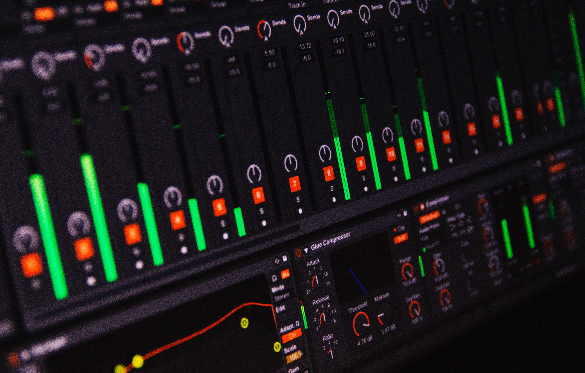

DAW(Digital audio workstation) 은 디지털 오디오의 재생, 녹음 및 편집 등의 작업을 위한 워크스테이션을 말한다. 일반적으로 DAW 기반의 워크스테이션은 컴퓨터 기반 DAW, 통합형 DAW으로 나뉜다.
컴퓨터 기반 DAW는 PC, ADC/DAC(오디오 인터페이스), 오디오 편집 소프트웨어 등 3가지를 필요로 한다. ADC/DAC(Audio to Digital/Digital to Audio signal Conversion)은 아날로그 오디오 신호와 디지털 오디오 신호를 상호 변환이 가능케하는 오디오 인터페이스를 뜻한다. 이것은 기본적으로 오디오 신호 입력을 위한 "Audio In", 악기(전기 기타, 샘플러 등등)의 신호 입력을 위한 "Line In", 오디오 출력을 위한 "Audio Out"을 기본적으로 제공하며, 경우에 따라 미디(마스터키보드, 드럼머신 등등) 신호를 받기 위한 "MIDI In"과 출력을 위한 "MIDI Out", 마이크로폰 입력을 위한 "MIC In"을 제공하는 경우도 있다. (MIC In은 마이크로폰 입력 신호의 증폭을 위한 "마이크 프리앰프를 제공"한다는 점에서 Line In과 차별된다.) 오디오 편집 소프트웨어는 통상 운영 체제나, 경우에 따라 오디오 인터페이스에 종속되어 사용이 가능한 컴퓨터 프로그램이다. 일반적으로 미디의 입력, 멀티트랙 편집, 오디오의 녹음, 멀티트랙 편집, 가상악기나 이펙터 사용, 믹싱과 마스터링 기능을 제공한다. 이것은 오디오 자원, 가상악기, 이펙터 사용량에 따라 PC의 높은 사양을 요구하기 때문에 고성능의 CPU, 큰 용량의 램을 사용하는 것이 바람직하다. 일반적으로 사용자의 운영 체제에서 실행가능한 프로그램으로 해야 하며, 일부 프로그램은 특정 오디오 인터페이스가 아니면 실행이 불가능한 경우도 있다. (예: 프로툴)
통합형 DAW는 오디오 믹서, 컨트롤, 오디오 신호 변환기와 데이터 기억 장치를 하나의 장비에 통합한 환경을 말한다. 이것은 컴퓨터 기반 DAW와 다르게 PC 사양에 영향을 받지 않으며, 가장 최적화된 작업 환경을 제공하지만, 가격이 높다는 단점이 있다. 최근[언제?]에는 GUI 기반의 출력 장치도 같이 나와 별도의 PC나 모니터를 요구하지 않는 장비가 나오고 있다.